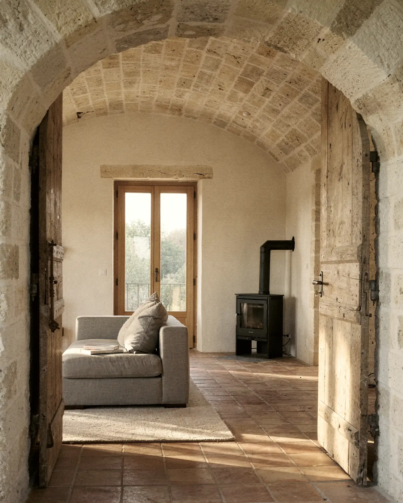
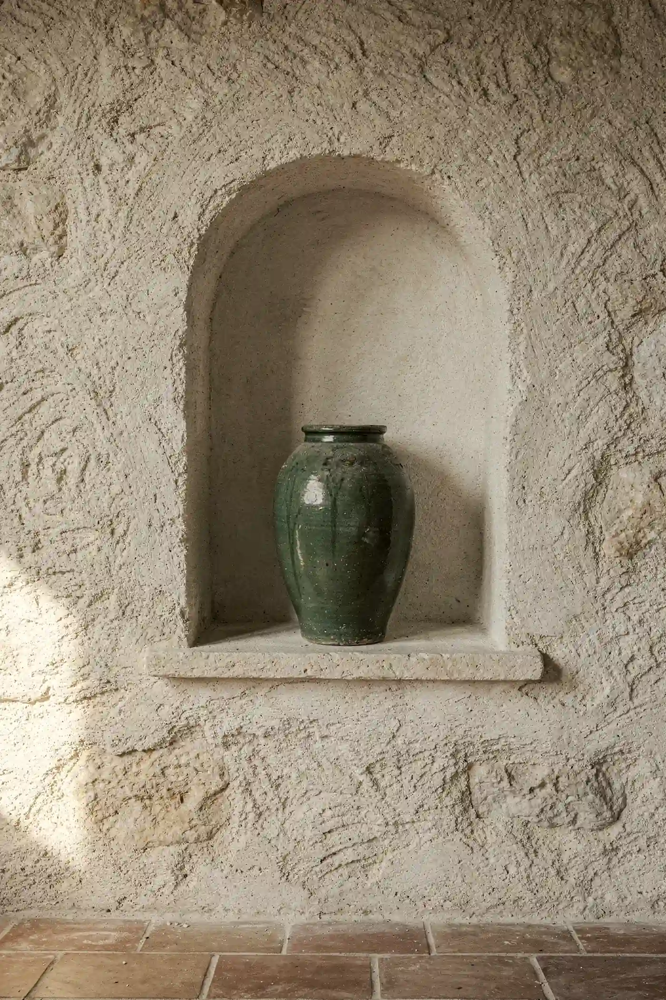
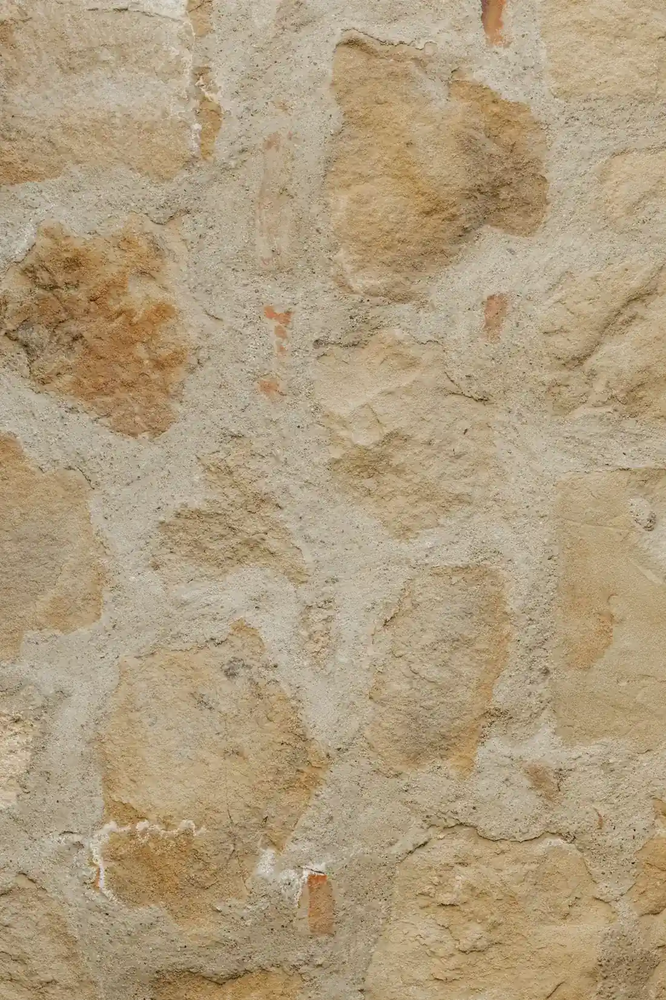
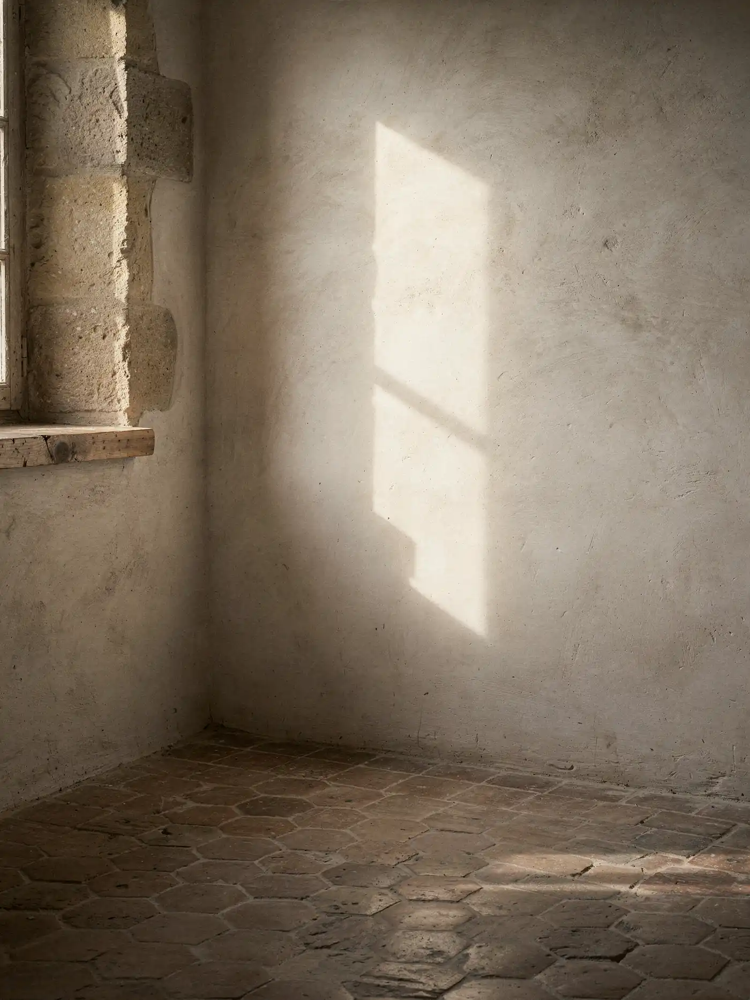

La grange aux deux lumières
Rénovation à Lourmarin (Vaucluse), livrée en 2025
Une grange de 1820 ouverte au sud, enduits à la chaux faits sur place, voûtes gardées telles quelles. Démo : projet et textes fictifs.


Nous avons gardé chaque pierre qui portait encore et remplacé le reste par de la chaux, pas par du béton.

